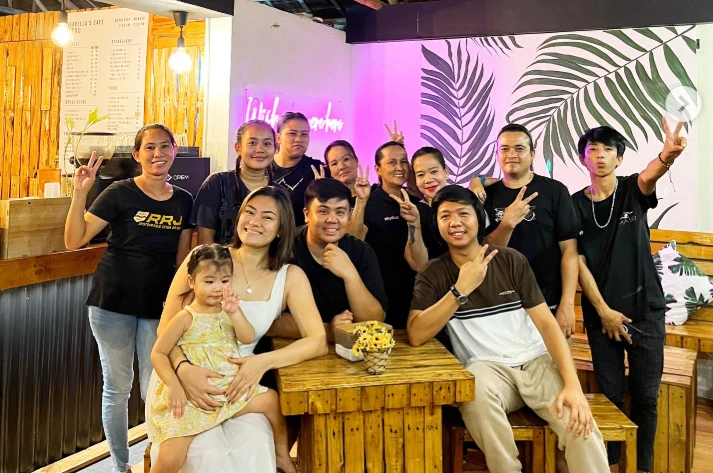

Isabella’s Cafe began as a simple dream shared by two coffee enthusiasts who wanted to bring a taste of luxury to the serene shores of San Jose, Antique. Guided by their passion for exceptional flavors and heartfelt hospitality, they transformed a quiet spot on the Seawall into a bustling community hub.
Every detail of the cafe—from the meticulously sourced beans to the elegant black-and-gold aesthetic—reflects their dedication to quality. They believe that a cup of coffee isn't just a drink; it's a momentary escape, a spark of inspiration, and a way to bring people together.
Perched perfectly on the Marina Sea Wall, Isabella’s Cafe offers an ambiance that simply cannot be replicated. Our open-air architecture invites the soothing coastal breezes inside, creating an atmosphere that is as refreshing as our signature iced coolers.
Whether you're looking for a quiet morning reading corner bathed in natural sunlight, or a romantic evening spot to watch the sky ignite over the Sulu Sea, our space is designed to be your sanctuary. It’s where modern elegance meets the effortless beauty of Antique’s coastline.